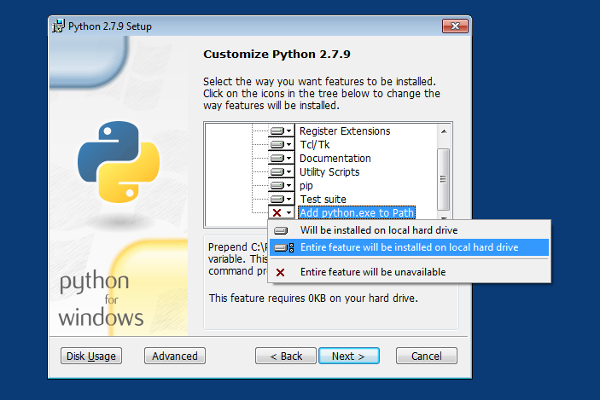

Installation¶
Stand-alone executable¶
MuCloud is offered as a stand-alone executable for Linux, MacOSX, and Windows, which is the easiest method for getting up and running. Extract the latest release from GitHub in a convenient place on your computer and follow the instructions for setting up your AWS account.
From the source¶
MuCloud requires Python 2.7 or 3.x with the pip installer, and a compatible C/C++ compiler to install the required libraries. The following instructions describe getting these tools setup and using the tools to install MuCloud from the source.
Start by getting the source code for the latest release from GitHub, or cloning the master (stable) branch. Then follow the instructions below based on your operating system (Linux, MacOSX, or Windows).
Linux¶
On Linux, the easiest way to setup Python is by installing system packages. Make sure to install the pip installer and development package for the Python version you intend to use. On Ubuntu the relevant packages are python, python-dev, and python-pip for Python 2.7. Python and pip can alternatively be installed from the source.
Extract the MuCloud files in a convenient place and open a terminal in that directory.
cd /path/to/mucloud
Use the pip installer to install the required Python packages. Optionally, a virtual environment can be used to separate the system packages from MuCloud dependencies. Preface the pip commands with sudo if you are not using a virtual environment.
sudo pip install -r requirements.txt
Change the permissions of the config.ini configuration file to prevent others from reading it.
chmod 500 config.ini
Now you have successfully installed MuCloud on Linux. The next step is to set up the configuration file with your AWS settings to allow access to your account.
MacOSX¶
OS X Mavericks and Yosemite ship with Python 2.7.5 and 2.7.6 respectively, which are both capable of running MuCloud. Follow the instructions for installing pip, which is the Python program for installing dependent packages.
The Xcode development environment is required for C/C++ code compilation, which is needed in many Python packages. It can be installed from the App Store.
Extract the MuCloud files in a convenient place and open a terminal in that directory.
cd /path/to/mucloud
Use the pip installer to install the required Python packages. Optionally, a virtual environment can be used to separate the system packages from MuCloud dependencies. Preface the pip commands with sudo if you are not using a virtual environment.
sudo pip install -r requirements.txt
With certain versions of Xcode, at least 5.1 and 5.2, you may need to downgrade a particular error to a warning in order for compilation of the required package, pycrypto. This error can be downgraded by setting the ARCHFLAGS environment variable and passing it to the sudo environment with the -E flag.
export ARCHFLAGS=-Wno-error=unused-command-line-argument-hard-error-in-future
sudo -E pip install pycrypto
sudo pip install -r requirements.txt
If you have established a Python environment that does not require root access for package installation, the sudo command and -E flag are not required.
Finally, change the permissions on config.ini configuration file to prevent others from reading it.
chmod 500 config.ini
Now you have successfully installed MuCloud on MacOSX. The next step is to set up the configuration file with your AWS settings to allow access to your account.
Windows¶
On Windows, download a recent release of Python that includes the pip installer (e.g. Python 2.7.9). If you already have Python 2.7 you can install pip separately. Alternatively, you can use the WinPython distribution, which comes with many useful packages pre-installed.
In the Python 2.7 installer, under “Customize Python 2.7”, ensure “Add python.exe to path” is included.
Download and install the Microsoft Visual C++ Compiler for Python 2.7. This allows the Python pip installer to compile required C/C++ code that is included in some Python packages.
Restart your computer.
Open the command prompt (cmd) and verify that Python is installed properly.
python
To exit the Python interpreter type exit(). Now you have the required Python environment.
To install MuCloud and its dependencies, download the latest release from GitHub. Extract the MuCloud files in a convenient place on your computer and open a command prompt in that directory.
cd C:\path\to\mucloud
Use the pip installer to install the required Python packages. Optionally, a virtual environment can be used to separate the system packages from MuCloud dependencies.
pip install -r requirements.txt
Now you have MuCloud installed on Windows. The next step is to set up the configuration file with your AWS settings to allow access to your account.